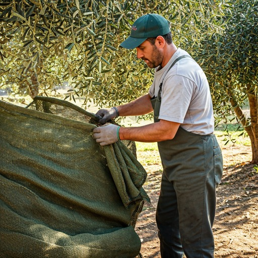
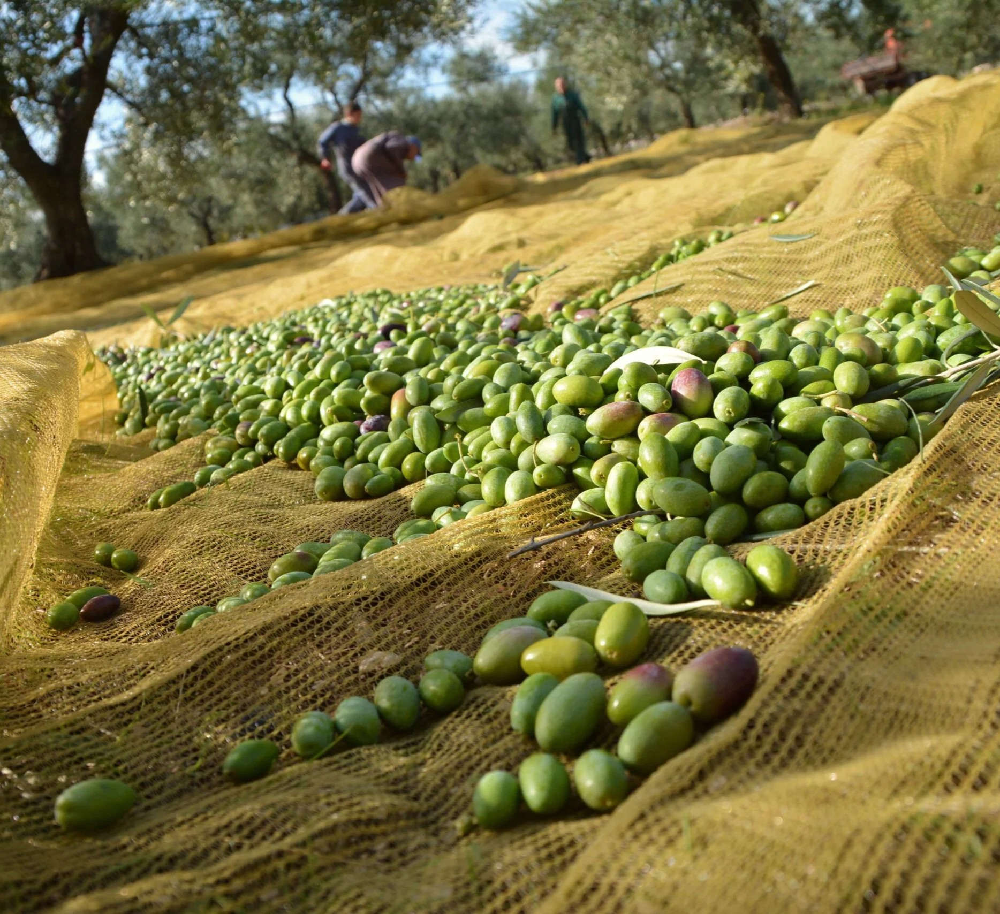
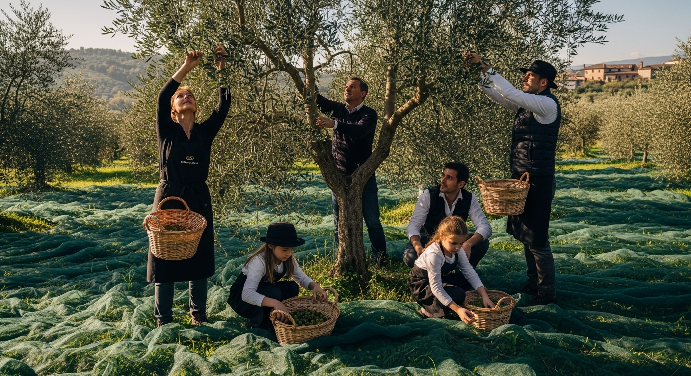
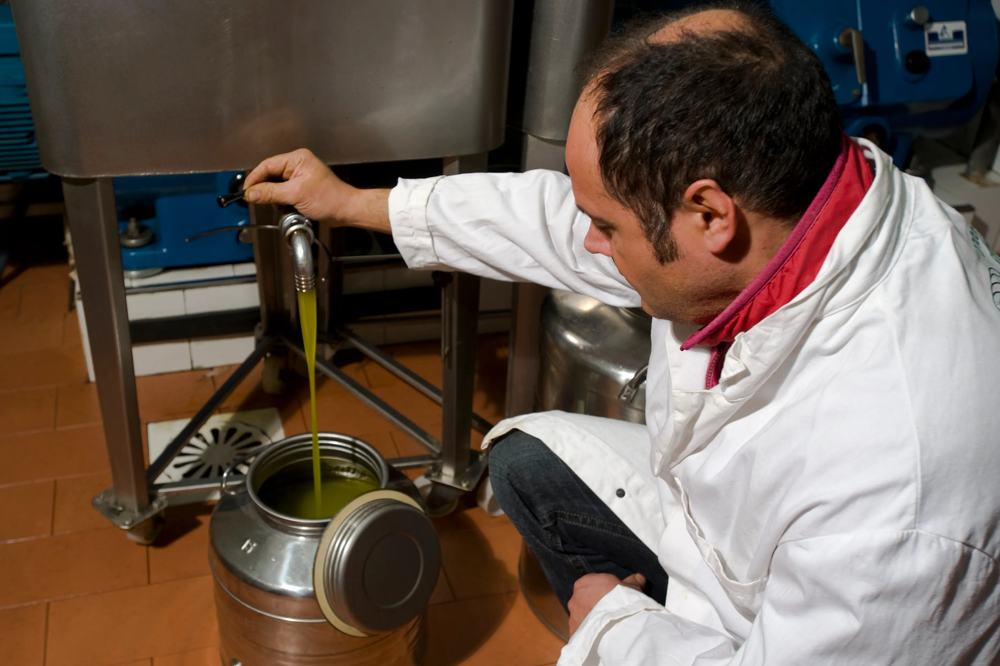

OP Oliveti
Terra di Bari
Cooperativa agricola leader nella produzione di olio extravergine di oliva, impegnata nella sostenibilità ambientale, economica e sociale.
Scopri di più ↓L'azienda
Una cooperativa agricola nel cuore della Puglia
L' Organizzazione di Produttori OP Oliveti Terra di Bari è una cooperativa agricola che esiste dal 1974 e lavora nel settore degli olivi nella provincia di Bari. Questo gruppo unisce più di 5.800 produttori e diverse cooperative locali, prendendosi cura della coltivazione, della trasformazione e della vendita dell'olio extravergine di oliva. Il loro obiettivo è promuovere la qualità, la possibilità di rintracciare la provenienza dei prodotti e valorizzare il territorio della Puglia.

MODELLO PRODUTTIVO
Sistema cooperativo
Il modello cooperativo di OP Oliveti Terra di Bari si basa sulla collaborazione tra produttori locali, con l’obiettivo di creare una filiera più equa, trasparente e sostenibile.
Collaborazione
I produttori lavorano insieme condividendo risorse, competenze e obiettivi comuni.
Filiera integrata
Controllo completo del processo produttivo, dalla coltivazione alla commercializzazione.
Valore equo
Riduzione degli intermediari e maggiore valore riconosciuto ai produttori locali.
Sviluppo locale
Supporto all’economia del territorio e crescita sostenibile della comunità agricola.
Dati aziendali e risultati
I dati riportati derivano dal bilancio e dal report di sostenibilità dell’OP Oliveti Terra di Bari, e mostrano l’impatto economico, sociale e produttivo della cooperativa.
5.804
Soci produttori coinvolti nella cooperativa
6+ mln kg
Olio extravergine di oliva conferito annualmente
64,6 mln €
Valore complessivo della produzione
Filiera
Integrata, tracciabile e sostenibile
Sostenibilità
Ambiente
Gestione efficiente delle risorse agricole e riduzione dell’impatto ambientale.
Filiera
Tracciabilità completa della produzione per garantire qualità e trasparenza.
Natura
Tutela della biodiversità e valorizzazione del territorio pugliese.
Economia
Supporto a oltre 5.800 produttori locali e sviluppo economico sostenibile.
Report di sostenibilità 2024
Bilancio di Sostenibilità dell’OP Oliveti Terra di Bari.
Una sintesi dei principali impatti ambientali, sociali ed economici della cooperativa.

🌿 Ambiente
Riduzione dell’uso di prodotti chimici,
tutela del suolo e della biodiversità,
promozione di pratiche agricole sostenibili e a basso impatto.

👥 Impatto sociale
Oltre 5.800 produttori coinvolti.
Sostegno alle comunità rurali,
valorizzazione del lavoro agricolo e cooperazione territoriale.

🏛 Governance
Gestione trasparente e partecipata.
Decisioni condivise tra i soci
e distribuzione equa del valore lungo la filiera.
QUALITÀ
Certificazioni
DOP Terra di Bari
Certifica l’origine geografica dell’olio e il rispetto di standard qualitativi elevati.
Produzione Biologica
Garantisce l’utilizzo di metodi agricoli sostenibili senza sostanze chimiche.
ISO 22005
Assicura la tracciabilità della filiera alimentare e la sicurezza del prodotto.
Trasparenza in ogni dato
Ogni informazione è basata su dati ufficiali, bilanci e comunicazioni aziendali.
Il progetto è stato rielaborato a scopo educativo universitario.
CONTATTI